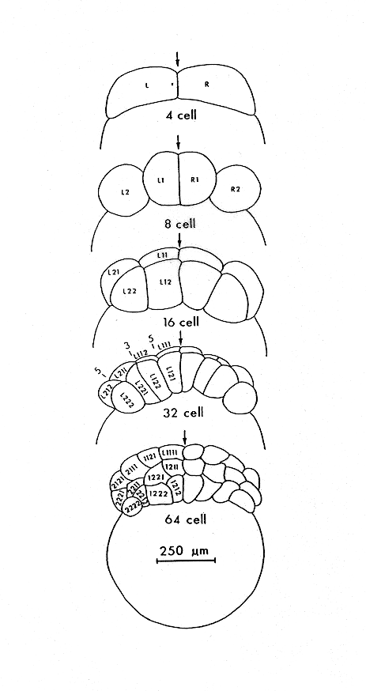

Modified from:
Kimmel et al., 1955.
Developmental Dynamics 203:253-310. Copyright © 1995 Wiley-Liss, Inc.
Reprinted only by permission of Wiley-Liss, a subsidiary of John Wiley &
Sons, Inc.
Fig. 7. Camera lucida drawings of face views during cleavage, showing lineal relationships of the blastomeres from the 4-cell stage through the 64-cell stage. Blastomere names are according to cell lineage, and also indicate cell positions. Each name represents two cells in the embryo, one visible in the figure and one that would be visible by rotating the embryo through 180 degrees about the animal-vegetal axis (i.e. only 2 cells are shown here at the 4-cell stage). Cell L is to the left of the first cleavage plane and cell R is to the right at the 4-cell stage (Hence the designations L and R are not with reference to the future left and right sides of the embryo; see text). Cell L divides to generate L1, by convention the sister closer to the animal pole, and L2. L1 divides to generate L11 (closer to the animal pole) and L12, and so on. The deep cells are not in the drawing for the 64-cell stage. From Kimmel and Law (1985a).

Figure 7